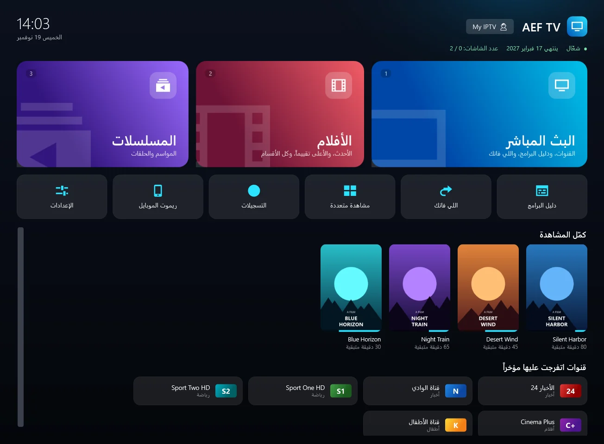

المساعدة
التثبيت
- حمّل ملف AEFMediaPlayer-…-Setup.exe من صفحة أحدث إصدار.
- افتحه واختار اللغة وكمّل الخطوات.
- لو ظهرت رسالة Windows protected your PC: اضغط More info وبعدين Run anyway.
أول مرة يفتح، البرنامج بيسألك على اللغة والشكل، وإذا كنت عايزه يبقى هو اللي بيفتح الفيديوهات. المتطلبات: ويندوز 10 (1809 أو أحدث) أو ويندوز 11، 64 بت.
التحديثات: البرنامج بيدوّر مرة في اليوم، ولو فيه جديد بينزّله في الخلفية ويتأكد من سلامته ويسطّبه لما تقفل البرنامج. ولو حابب يسألك الأول: الإعدادات ← اقفل "تسطيب التحديثات لوحدها".
IPTV والشاشة الرئيسية
إضافة حساب
- اضغط Ctrl+T (أو الوسائط ← حسابات IPTV) ← إضافة حساب.
- اختار اسم مستخدم وكلمة سر واكتب عنوان السيرفر والبيانات اللي بعتهالك المزوّد، أو اختار رابط قائمة قنوات (m3u) والصق الرابط.
- اضغط "تأكيد وحفظ".
كلمة السر بتتحفظ متشفّرة على الجهاز، ومش بتتكتب في أي ملف ولا سجل.
الشاشة الرئيسية

- Ctrl+T بيفتح الشاشة الرئيسية لحسابك: البث المباشر والأفلام والمسلسلات (أو الأرقام 1 2 3).
- فوق: حالة اشتراكك وميعاد انتهاؤه وعدد الشاشات، ومن زرار اسم الحساب تبدّل بين حساباتك أو تديرهم.
- كمّل المشاهدة: الأفلام والحلقات اللي وقفت في نصها، وبتكمّل من نفس المكان.
- القنوات الأخيرة: ضغطة وترجع لقناة كنت بتتفرج عليها.
الأفلام والمسلسلات
بصورها وقصتها وتقييمها، مقسّمة: الأحدث، والأعلى تقييماً، والمفضلة، وكل الأقسام، مع بحث. في صفحة الفيلم أو المسلسل تقدر تضيفه للمفضلة.
بملف قنوات (m3u)
افتح الملف زي أي ملف، أو الصق الرابط في "فتح بث" (Ctrl+N). لو فيه لوجوهات ومجموعات ودليل برامج هتظهر لوحدها.
وضع التليفزيون

أول ما تشغّل قناة، البرنامج بيبقى زي الرسيفر: أزرار الفيديو وقائمة التشغيل بيختفوا، وبيظهر شريط القناة وأزرار التليفزيون.
- اسم القناة: حرّك الماوس، أو دوس على الصورة، أو Space، أو I: يظهر الرقم واللوجو والاسم، والبرنامج اللي شغال واللي جاي. وبيختفي لوحده لما توقف الماوس.
- تقليب القنوات: ↑ ↓، أو اكتب رقم القناة. Backspace يرجّعك لآخر قناة.
- الصوت: ← →.
- قائمة القنوات: Enter. المجموعات على جنب، وجدول برامج القناة اللي واقف عليها على الجنب التاني. الأسهم بتتحرك، وEnter يشغّل، وEsc يقفل.
- الخروج: T أو زرار التليفزيون في آخر الأزرار. ولو مش عايزه خالص: الإعدادات ← IPTV ← اقفل "وضع التليفزيون للقنوات".
ريموت الموبايل
- اضغط Ctrl+J في البرنامج.
- امسح الكود اللي ظاهر بكاميرا الموبايل. لازم الموبايل والكمبيوتر يكونوا على نفس الواي فاي. أول مرة ممكن ويندوز يسألك تسمح للبرنامج يستخدم الشبكة: اختار "سماح" (الشبكات الخاصة).
- من صفحة الريموت تقدر تثبّته كأيقونة: في الآيفون من زرار المشاركة ← "إضافة إلى الشاشة الرئيسية"، وفي أندرويد من قائمة المتصفح.
- الأسهم وOK زي ريموت الرسيفر، وزرار القنوات بيفتح قائمة القنوات على الشاشة وتقلّب فيها بالأسهم، ورجوع بيقفلها.
- الريموت شغال على شبكة البيت بس، ومقفول بكود سري. "كود جديد" في نافذة الريموت بيقطع أي موبايل قديم.
دليل البرامج والتسجيل
- دليل البرامج: Ctrl+G. القنوات على جنب وبرامج اليوم على الجنب التاني.
- شوف اللي فاتك: البرامج اللي عدّت وعليها علامة ⏪ تقدر تتفرج عليها من تسجيلات المزوّد، أو ابدأ البرنامج الحالي من أوله (لو مزوّدك بيدعم ده).
- فكّرني: اختار برنامج جاي واضغط "فكّرني"، هيظهرلك تنبيه قبل ما يبدأ بدقيقة.
- تسجيل: Ctrl+R يسجّل اللي شغّال دلوقتي. ومن الدليل اختار برنامج واضغط "تسجيل"، والبرنامج هيحوّل على القناة ويسجّله لوحده (خلّي البرنامج مفتوح). التسجيلات في الفيديوهات ← AEF Media Player ← Recordings.
مشاهدة متعددة وقفل القنوات
- قناتين أو أربعة مع بعض: Ctrl+U، أو كليك يمين على قناة ← "شاهد مع قنوات تانية". دوس على أي صورة تسمع صوتها، ودبل كليك تتفرج عليها لوحدها.
- قفل برقم سري: كليك يمين على قناة في القائمة ← اقفل القناة أو المجموعة كلها. أول مرة هتختار رقم سري (4 أرقام أو أكتر). الإعدادات ← IPTV فيها تغيير الرقم أو شيل كل الأقفال.
التشغيل
- فتح ملف: اسحبه على البرنامج، أو Ctrl+O. فولدر كامل بيتفتح كقائمة تشغيل.
- يكمّل من مكان ما وقفت: الأفلام (وأفلام ومسلسلات حسابات IPTV) بتفتح عند آخر مكان شفته.
- صورة على شريط الوقت: قف بالماوس على الشريط تشوف صورة من اللحظة دي.
- العلامات: B تحفظ اللحظة، و Shift+B تروح للعلامة اللي بعدها.
- مؤقت النوم: التشغيل ← مؤقت النوم، والصوت بيوطى بالراحة قبل ما يقف.
- المشغّل المصغّر: Ctrl+M شباك صغير فوق أي برنامج.
الترجمة
- ملف الترجمة اللي بنفس اسم الفيلم بيتفتح لوحده. ملفات الترجمة العربية القديمة بتظهر صح من غير ما تعمل حاجة.
- ترجمة من الإنترنت: Ctrl+D. النجمة ★ معناها إن الترجمة معمولة لنفس نسخة الفيديو بالظبط.
- حجم الخط واللون والتوقيت: من قائمة الترجمة، أو G و H للتوقيت.
المكتبة والتشغيل على التليفزيون
- المكتبة: Ctrl+E. المسلسلات بتتعرف من أسماء الملفات زي
Show.S01E02أومسلسل - الحلقة 5. - التليفزيون الذكي: Ctrl+K واختار التليفزيون (لازم يكون على نفس الشبكة)، أو "عرض الشاشة كلها (Miracast)".
الشكل واللغة وسهولة الاستخدام
- الإعدادات: Ctrl+,.
- اللغة: العربية، الإنجليزية، الفرنسية، التركية، الأردو.
- الشكل: داكن، فاتح، أسود تماماً، رمادي أزرق، و8 ألوان مميزة.
- سهولة الاستخدام: حجم الخط (عادي، كبير، أكبر)، وتباين عالٍ، والأزرار ليها أسماء بيقراها قارئ الشاشة.
الاختصارات
| Space | تشغيل / إيقاف مؤقت (في وضع التليفزيون: اسم القناة) |
| F / F11 | ملء الشاشة (Esc للخروج) |
| ← → | 10 ثواني (في وضع التليفزيون: الصوت) |
| ↑ ↓ | الصوت (في وضع التليفزيون: القناة التالية / السابقة) |
| Enter / Backspace | في وضع التليفزيون: قائمة القنوات / آخر قناة |
| T / I | وضع التليفزيون / معلومات القناة |
| M | كتم الصوت |
| N / P | التالي / السابق |
| V | إظهار / إخفاء الترجمة |
| B / Shift+B | علامة / العلامة التالية |
| Ctrl+O / Ctrl+N | فتح ملف / بث |
| Ctrl+T / Ctrl+G | الشاشة الرئيسية للـ IPTV / دليل البرامج |
| Ctrl+J / Ctrl+U | ريموت الموبايل / مشاهدة متعددة |
| Ctrl+R / Ctrl+D | تسجيل / ترجمة من الإنترنت |
| Ctrl+E / Ctrl+K | المكتبة / التشغيل على التليفزيون |
| Ctrl+, | الإعدادات |
لو حصلت مشكلة
- الصورة طالعة غلط أو بتقطّع: الإعدادات ← التشغيل ← اقفل "تسريع العتاد" وجرّب تاني.
- الترجمة حروف غريبة: الترجمة ← ترميز النص ← العربية (Windows-1256).
- قناة مش شغالة: جرّب فحص القنوات، وكلّم مزوّد الخدمة لو القنوات كلها واقفة.
- الموبايل مش بيوصل للريموت: اتأكد إنه على نفس الواي فاي، وإن ويندوز سامح للبرنامج بالشبكة. ولو عنوان الكمبيوتر اتغير، امسح الكود تاني.
- لسه فيه مشكلة؟ قائمة "مساعدة" ← الإبلاغ عن مشكلة جوه البرنامج، أو من هنا.